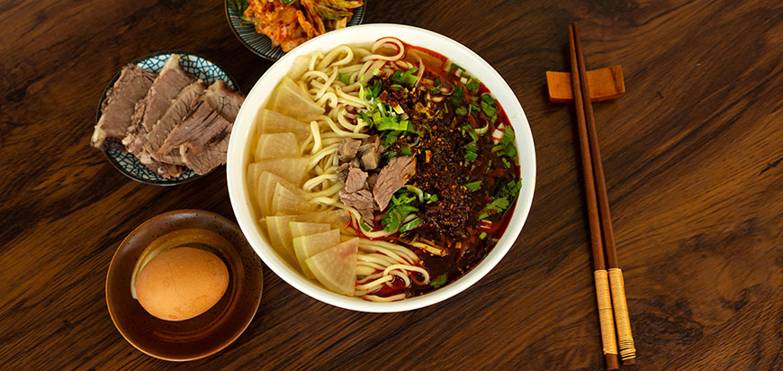

Explore Lanzhou – Where the Yellow River Flows, Noodles Delight, and History Lingers



Lanzhou, the capital of Gansu Province, is a city shaped by the Yellow River—China’s “Mother River”—which cuts through its heart, dividing the city into north and south. Here, the air carries the aroma of hand-pulled noodles and roasted lamb, ancient waterwheels turn slowly by the river, and the surrounding Qinghai-Tibet Plateau offers dramatic mountain views. A trip to Lanzhou is a blend of nature and culture: strolling along the Yellow River Bund to watch the sunset, savoring a bowl of hot Lanzhou Lamian (hand-pulled noodles) at a local stall, and exploring relics that tell stories of the Silk Road.

Nature lovers will marvel at the Yellow River Mother Sculpture (a symbol of Lanzhou’s bond with the river), Baita Mountain (with panoramic views of the city and river below), and Xinglong Mountain (a lush mountain park with pine forests and waterfalls). History buffs can step back in time at the Lanzhou Waterwheel Garden (showcasing ancient irrigation tools), Bingling Temple Grottoes (1,600-year-old Buddhist carvings along the Yellow River), and the Gansu Provincial Museum (home to the famous “Flying Horse of Gansu” bronze relic).
And the food? It’s all about simplicity and flavor. Lanzhou Lamian (hand-pulled noodles in clear broth) is a global icon, made fresh right in front of you. Roasted Lamb Skewers (spiced with cumin and chili) are a street food staple, perfect for a quick bite. For something sweet, Sweet Fermented Rice Soup (warm, slightly alcoholic, and topped with raisins) warms you up on cool evenings. By the end of your trip, you’ll understand why Lanzhou is called “the Pearl of the Yellow River”—and why its food and scenery leave a lasting impression.

Travel Tips for Lanzhou
Best Time to Visit:
Tip 1: Spring (April–May): Mild (10°C–22°C), blooming flowers at Xinglong Mountain, and gentle winds along the Yellow River—ideal for outdoor walks.
Tip 2: Autumn (September–October): Cool (12°C–25°C), clear skies for mountain views, and perfect weather for eating street food (no summer heat or winter cold).
Tip 3: Avoid winter (December–February): Cold (-5°C–8°C) and dry; summer (June–August) is warm (25°C–32°C) but occasionally dusty due to nearby deserts.
Transportation:
Tip 1: Getting to Lanzhou:
Fly to Lanzhou Zhongchuan International Airport (LHW)—take the high-speed airport rail (40 mins, 21 CNY) or a taxi (1 hour, ~200 CNY) to downtown. High-speed trains from Xi’an (5 hours, ~300 CNY) or Xining (1.5 hours, ~50 CNY) are convenient.
Tip 2: Getting Around:
Bike: Rent a shared bike (2 CNY/30 mins) to cycle along the Yellow River Bund—one of the best ways to experience the river.
Buses: The “Yellow River Line” (Bus No. 2, 4, 6) covers riverfront spots; single ride 1–2 CNY.
Taxis/Didi: Starts at 8 CNY; short trips within downtown cost ~15–25 CNY.
Essential Tips:
Tip 1: Eat Lanzhou Lamian at a “mom-and-pop” stall (not tourist restaurants): Look for places with locals lining up—freshly pulled noodles taste best here.
Tip 2: Visit Bingling Temple Grottoes by boat: Take a 2-hour cruise from Lanzhou (150 CNY/adult) to reach the grottoes— the river views en route are stunning.
Tip 3: Bring a mask for dusty days: Lanzhou occasionally has sandstorms in spring; a disposable mask will protect you from dust.